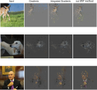
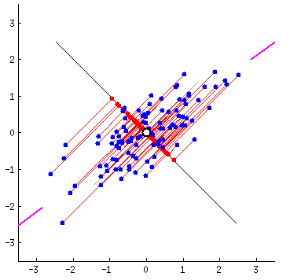
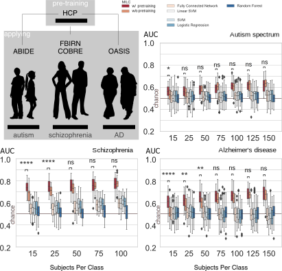
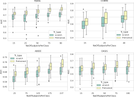

subproject 3
Predictive Neuroimaging
presenter: Sergey Plis


Predictive Neuroimaging
Recognition, diagnosis, and estimation can all be thought of as special cases of prediction.
We are interested in algorithms that learn to predict well
Segmentation on the edge
Datasets grow in size
Problem: large high dimensional data is not easy to understand
Solution: use AI for interpretation
Two types of eXplainable AI
Explain the data
Interpret the model
To Understand, Learn to Predict

Mahfuz Rahman
Usman Mahmood
How to train predictive models
when there isn't enough data
Zafar Iqbal
when there isn't enough data
Train via fMRI time reversal

Debbratha Saha
Gaining insight about populations (w/ privacy)

Questions?